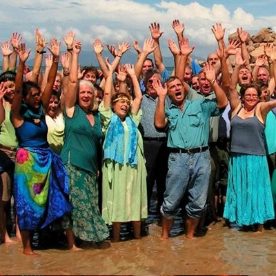
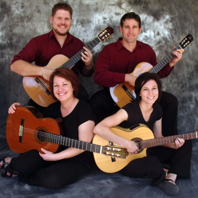

Local Talent
The Townsville Community Music centre promotes local, home grown talent! Click on the artist below to find out more.
Aquapella
Aquapella are 50 singers from the Townsville area bringing you a cappella world music at its very best: inspiring and uplifting harmonies from around the globe.

Aviva
Four talented musicians combine their skills in a variety of musical styles including fiery Rhumbas, Tangos, Serenades - a mixture of the most devine and swoon-worthy pieces, guaranteed to delight the senses.
Camerata
The Camerata Singers comprises a group of trained singers, both male and female, from age 18 and over who strive to provide quality performances in a range of styles from classical through to Acappella and contemporary.
Wassa
Wassa is a six-piece percussion group performing traditional rhythms from West Africa on traditional instruments.
Celtic Fyre
They will break your heart with the mournful and eerie sounds of the Great Highland Bagpipe and then crank it up real hard and rock you 'til you drop.
Aquapella are 50 singers from the Townsville area bringing you a cappella world music at its very best: inspiring and uplifting harmonies from around the globe.
Four talented musicians combine their skills in a variety of musical styles including fiery Rhumbas, Tangos, Serenades - a mixture of the most devine and swoon-worthy pieces, guaranteed to delight the senses.
The Camerata Singers comprises a group of trained singers, both male and female, from age 18 and over who strive to provide quality performances in a range of styles from classical through to Acappella and contemporary.
Wassa is a six-piece percussion group performing traditional rhythms from West Africa on traditional instruments.
They will break your heart with the mournful and eerie sounds of the Great Highland Bagpipe and then crank it up real hard and rock you 'til you drop.

The band plays a range of different styles of concert band music, ranging from classical to musical theatre and modern.

The pair perform a fine selection of music from Latin, Jazz, Celtic, Classical and popular styles.
Their tight harmony and vocal strength bring a fresh feel to original, contemporary and traditional works, uncovering a rich tapestry of songs gathered in their travels from around the world. Most songs are a cappella but sometimes accompanied by guitar and/or harmonica. Moods in their songs range from downright to real tear jerkers and audience participation is encouraged.
The Band is a not for profit community 22 piece Big Band playing Jazz and Big Band music.

The Rosewood guitar Quartet bring with them a sense of elegance, and provide a relaxing atmostphere through their music.